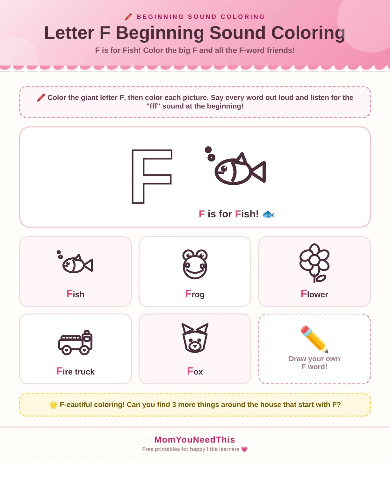

Letter F Beginning Sound Coloring Color Pictures That Begin With The F Sound
Help your little learner practise hearing the beginning sound in words while enjoying a fun coloring activity featuring words that begin with the letter F.
Last updated:
Quick Answer
Coloring with a rule: only the pictures whose names open with the blowing /f/ — fish, frog, flower — earn their color, and the rest stay white. Every picture forces a listening decision before a crayon moves, and f's stretchable sound makes it the most checkable page in the set. Large, simple outlines suit little hands. Print at home with no signup needed.
At a Glance
- Ages: Toddlers and preschoolers
- Activity: Coloring only the pictures that start with /f/ — fish, frog, flower
- Skills: Beginning sounds: listen first, then color
- Format: Printable worksheet (PDF)
- Cost: Free, no signup
🐟 Fish
🐸 Frog
🌸 Flower

💡 Listen, Find & Color
Say the name of each picture together first. Color only the pictures that begin with the F sound — the others stay uncolored, and that restraint is the lesson. Finish by coloring the big letter F itself in your child's favorite color.
⬇️ Download Free Printable 🖨️ Print🎁 Free printable for toddlers & preschoolers
🔎 Say The Words Together
Before a single crayon moves, tour the page and say every picture's name together. Keep fish in mind as the reference: if a name opens with the same teeth-on-lip blow, it is a coloring candidate; if it opens with anything else, it waits. Naming first turns coloring time into listening time.
🖍️ Make Coloring Part Of The Lesson
The uncolored pictures are not mistakes — they are the proof the listening worked. Point at one together and say its name: no blow, no color. Children take real pride in the restraint once they understand it is a rule they enforced, not a part they missed.
🎨 Which Pictures Earn Their Color? The F Rule
Fish, frog and flower earn their color on this page because they open with a blow — teeth on lip, air streaming. That is the whole rule. A picture of something that swims does not get colored for swimming; the ears, not the eyes, hand out the crayons here.
F is the easiest sound in the set to verify, because it stretches. An unsure child can hold the first sound — ffff — and feel the blowing position. If the teeth are not on the lip, it is not an f. Its voiced twin v uses the same position with a buzz, which is a fine distinction to save for another day.
When every blow-picture is colored, blow through the gallery one last time — fffish, fffrog, ffflower — racing to hold each sound longest. Then the leftovers can be colored freely: the listening is done, and the page can end as a treat.
🖨️ How to Use This Printable
Get started in minutes — everything here is free and made for busy parents.
- Download the printable. Tap the download button to save the free Free Letter F Beginning Sound Coloring file to your device.
- Print it out. Use any home printer and regular paper — cardstock works great for pages little hands will use again and again. The print button opens the full-size page in a new tab if you prefer to print from there.
- Learn together. Sit with your child and say every picture's name before any coloring starts. The decision — does it begin with /f/? — comes first; the crayons come second. Short sessions work best.
- Explore more. Check the free printables linked below for your next activity.
🎨 Keep Exploring Free Letter Activities
More alphabet learning activities are added regularly for toddlers and preschoolers.
🎁 View All Free Resources❓ Free Letter F Beginning Sound Coloring FAQs
Is this Free Letter F Beginning Sound Coloring printable free?
Yes — every printable on MomYouNeedThis is 100% free to download and print. No signup, no payment, just tap the download button and print the F sound coloring page as often as your child wants another round.
How do I use this letter f printable?
Print the page and work through it together: say each picture's name, stretch its first sound, and color only the pictures that begin with /f/. Short, playful sessions work better than long lessons for little learners.
What literacy skills does this practice?
Beginning sounds, listening discrimination, and fine motor control. The distinctive skill on the F page is verifying a sound with the body: teeth on lip, air moving. Because /f/ can be stretched and felt, children can check their own answers — the first taste of self-correcting reading strategies.
🔗 More Free Printables You’ll Love
Pair this printable with more free learning activities from the MomYouNeedThis library.
- 🎨 Free Letter B Sound ColoringFree printable letter b sound coloring for little learners.
- 🎨 Free Letter F Coloring PageFree printable letter f coloring page for little learners.
- 🔎 Free Find Letter F SoundFree printable letter f sound practice for little learners.
- 🔊 Free Letter F Sound MatchFree printable letter f sound match for little learners.